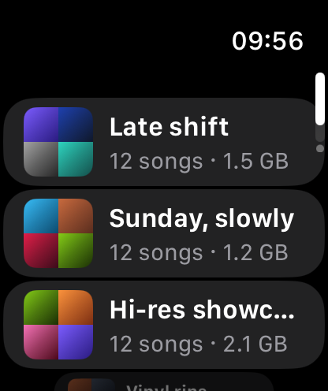

Apple Watch
A few favourites.
A little more freedom.
Set up with your paired iPhone, sync playlists, then download songs to your Watch and listen offline with your phone left behind.

Gumbo Music
Available in beta
The music on your NAS.
At home across your Apple devices.
iPhone · iPad · Mac · Apple TV
Apple Watch · CarPlay · AirPlay
Current beta: Synology NAS with DSM 7 or later.
Now in beta · Check availability in TestFlight.
Made for more of your day
Native apps for iPhone, iPad, Mac and Apple TV. Apple Watch for your wrist. Your own music, in more of the places you love to listen.
Apple Watch
Set up with your paired iPhone, sync playlists, then download songs to your Watch and listen offline with your phone left behind.

Apple TV
Browse your collection with the Apple TV remote and stream straight from your NAS. A native app for a night in.
CarPlay
Browse your library and control playback on the car’s display, through your connected iPhone in a CarPlay-compatible vehicle.
And on your speakers, with AirPlay. Send playback to compatible AirPlay speakers and devices.
Made for the music you own
All those albums you’ve collected. The favourites you return to. Give them a place that feels as good as they sound.
Browse albums, artists, genres and decades. Find a song with search, or start with what you’ve just added.
Albums first. Always your library.Download albums and playlists before you head out. Your music is ready when your connection isn’t.
Offline on iPhone, iPad and Mac.Make your own playlists, revisit recent plays, or let a favourites mix and daily library shuffle bring something back.
More listening. Less deciding.Touch on iPhone and iPad. Keyboard shortcuts on Mac. The remote on Apple TV. Familiar controls, shaped for the device in your hands.
Made for the way you listen.From your NAS to your next listen
Get Gumbo Music through TestFlight on your Apple device.
Sign in to your Synology NAS and choose your music folder. No extra media server to install.
Listen at home, stream away with remote access set up, or take your downloads offline.
The current beta requires a Synology NAS with DSM 7 or later and File Station. Listening away from home needs a reachable server connection, such as a configured HTTPS address or Tailscale.
Yours to keep
Your originals stay on your NAS. Music streams directly to your devices, or plays from your local downloads. There’s no Gumbo music-storage service in between.
Gumbo uses iCloud to sync profiles, playlists, favourites and listening data—not music files. Family sharing can also include NAS connection details.
If you choose genre suggestions, album and artist names are sent to Apple’s music catalogue. That optional lookup does not send your audio. Your existing NAS account is used to access your library.
Apple shares beta usage and crash information with the developer. Feedback you submit may also include screenshots and contact details. Read the full privacy policy for details about the app and this website.
Be part of the beta
Join the Gumbo Music beta and help us get the details right. Early testers get a free year at launch in exchange for their feedback.
Join the TestFlight betaThe beta is open. TestFlight shows current availability.
Bring your library.
Make yourself at home.